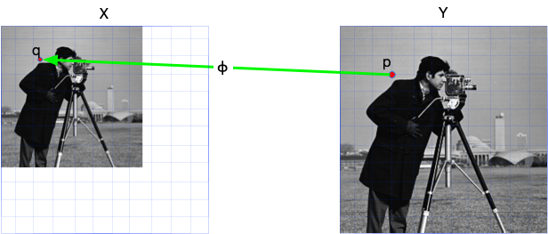

ImageTransformations.jl
This package provides support for image resizing, image rotation, and other spatial transformations of arrays.
Overview
ImageTransformations.jl consists of two sets of API: the low level warping operations, and the high-level operations that built on top of it.
- Low-level warping API:
warp: backward-mode warpingWarpedView: the lazy view version ofwarpInvWarpedView: the inverse ofWarpedView
- high-level spatial operations:
imresize: aspect adjustmentrestrict: a much more efficient version ofimresizethat two-folds/down-samples image to approximate 1/2 size. (This is now provided by ImageBase.)imrotate: rotation
For detailed usage of these functions, please refer to function references and examples. The following section explains the core concept image warping so that you can get a clear understanding about this package while using it.
Image warping
This is just a very simple explaination on the internal of ImageTransformations. For more information about image warping, you can take a look at the Princeton Computer Graphics course for Image Warping (Fall 2000)
Most image spatial transformation operations (e.g., rotation, resizing, translation) fall into the category of warping operation. Mathematically, for given input image X, a (backward-mode) warping operation f consists of two functions: coordination map ϕ and intensity estimator τ.
\[Y_{i,j} = f(X)_{i, j} = τ(X, ϕ(i, j))\]
Take the following resizing operation as an example, for every pixel position p in output image Y, we 1) use the backward coordinate map ϕ to get its corresponding pixel position q in original image X. Since q may not be on grid, we need to 2) estimate the value of X on position q using function τ, and finally 3) assign X[q] back to Y[p]. In Julia words, it is
for p in CartesianIndices(Y)
q = ϕ(p) # backward coordinate map
v = τ(X, q) # estimate the value
Y[p] = v # assign value back
endAs you may have notice, we use backward coordinate map because this is the simplest way to iterate every pixel of the output image. This is why it is called backward-mode warping. In some literature, it is also called reverse warping.

In ImageTransformations, the warp-based operation uses Interpolations as our intensity estimator τ:
using Interpolations, ImageCore, TestImages
using ImageTransformations
X = imresize(testimage("cameraman"), (64, 64)) # use small image as an example
sz = (128, 128)
Y = similar(X, sz...)
# intensity estimator using interpolation
itp = interpolate(X, BSpline(Linear())) # bilinear interpolation
τ(q) = itp(q...)
# A linear coordinate map that satisfies:
# - `ϕ(1, 1) == (1, 1)`
# - `ϕ(128, 128) == (64, 64)`
K = (size(X) .- (1, 1))./(sz .- (1, 1))
b = (1, 1) .- K
ϕ(p) = @. K*p + b
for p in CartesianIndices(Y)
q = ϕ(p.I)
Y[p] = τ(q)
end
mosaic(X, Y; nrow=1)This is the internal of ImageTransformations. For common usage of ImageTransformations, you should use either the low-level API warp or high-level API imresize and others.